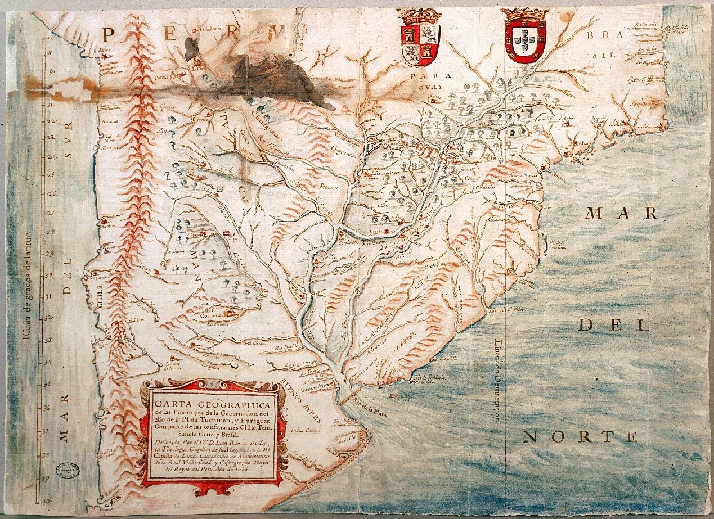

Élites locales y trayectorias políticas al sur de Charcas:
agentes de poder en Jujuy durante el siglo XVII
El presente trabajo examina las prácticas, políticas y las disputas jurisdiccionales de la élite de Jujuy durante el siglo XVII a través de las biografías de Juan Ochoa de Zárate, Pablo Bernárdes de Ovando y Pablo de Espinosa. El estudio demuestra la estrecha interdependencia social y política del espacio jujeño con los distintos núcleos de poder charqueños: La Plata, Potosí, Chichas y Lípez, entre otros.

El territorio como
fuente histórica.
Activá las capas, explorá los polígonos y consultá sus fichas. Cada entidad puede vincularse con personas, acontecimientos y fuentes documentales.
La mujer y su papel
activo y estratégico.
Las mujeres desempeñaron un papel fundamental en la consolidación de las élites locales del siglo XVII. A través de los matrimonios, contribuyeron a establecer alianzas entre familias y facilitar el acceso a encomiendas, tierras, recursos y prestigio social. Casos como los de Petronila de Castro y Bartolina Sánchez de Garnica muestran su importancia en la articulación de linajes.
También tuvieron un rol activo en la defensa del patrimonio familiar, utilizando recursos legales para proteger sus dotes frente a deudas y embargos. Además, administraron haciendas, negocios y redes comerciales durante las ausencias o tras la muerte de sus esposos, y reforzaron el prestigio familiar mediante donaciones, fundaciones religiosas y participación en cofradías.
Quién soy.
Lic. Rocío Soledad Campos
- Docente de Historia
- Becaria Doctoral en CONICET
- rociocampos1292@gmail.com
- Perfil de Academia.edu ↗